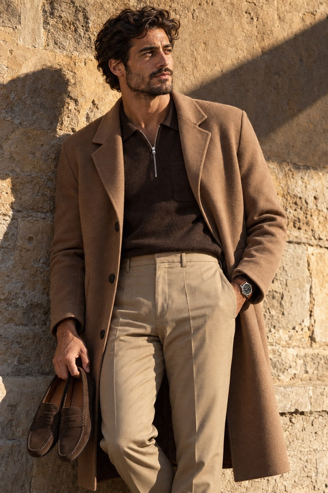
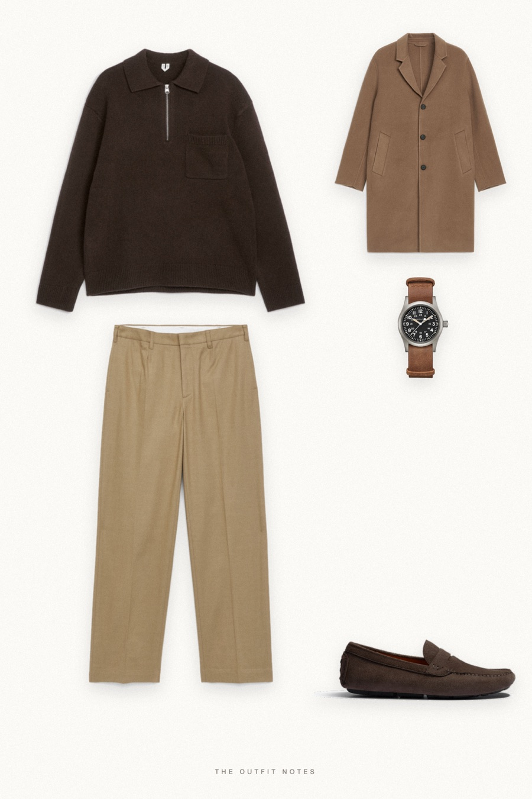

Camel Hour
brown polo under a long coat


Old money winter outfit for men: ARKET camel wool topcoat over a dark brown knitted zip polo and sand beige tailored trousers, with J.M. Weston Drive-On suede loafers and a Hamilton Khaki Field watch. A warm tonal quiet luxury look that drapes well and works for the office, dinners and weekends.
The pieces
This page contains affiliate links: if you buy through them, we may earn a commission at no extra cost to you. Disclosure.
 ARKET
ARKET
Camel wool topcoat
Shop ARKET
ARKET
Brown knitted zip polo
Shop ARKET
ARKET
Sand tailored cotton trousers
Shop![J.M. Weston Mocassin de conduite Drive-On [homme cuir veau velours marron foncé]](../../img/products/jm-weston-drive-on-velours-marron-fonce.jpg) J.M. Weston
J.M. Weston
Dark-brown suede loafers
Shop Hamilton
Hamilton
Khaki field watch
Shop
Prices are indicative, taken when the look was published, and may have changed. Pictures of the outfit are AI-generated illustrations of real products; the product photos are the retailers' own.
Published 1 October 2026.